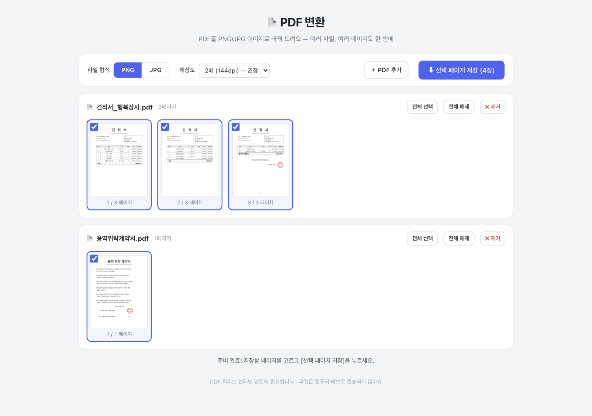
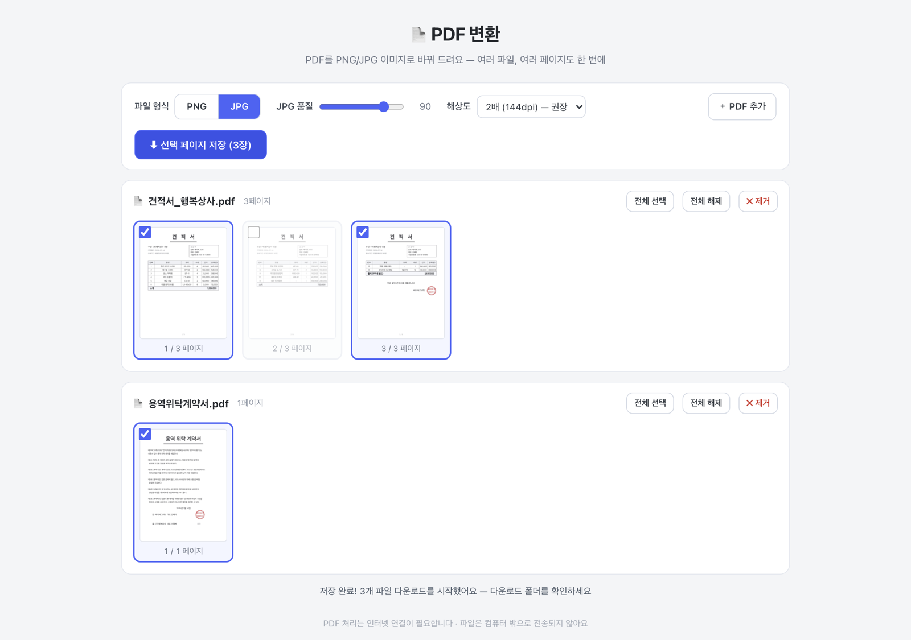

PDF를 페이지별 이미지로 바꿔야 할 때 쓰는 도구예요. 설치 없이 크롬에서 바로 쓰면 되고,
파일이 외부로 나가지 않아서 계약서·견적서 같은 문서도 안심하고 쓰셔도 됩니다.
2페이지 미리보기가 뜹니다 — 필요한 페이지만 체크
넣은 PDF의 모든 페이지가 썸네일로 보여요. 기본은 전체 선택이고, 필요 없는 페이지는 체크를 빼면 됩니다.

3포맷·해상도를 고르세요 (그대로 둬도 됩니다)
기본값(PNG · 2배 해상도)이면 대부분 충분해요. 용량을 줄이고 싶으면 JPG, 크게 인쇄할 거면 3~4배를 고르세요.
4저장 버튼을 누르면 다운로드 폴더로 들어갑니다
여러 장이면 크롬이 "여러 파일 다운로드를 허용할까요?" 하고 한 번 물어봐요. 허용 누르시면 끝.

파일 이름은 원본명 p01.png 형식으로 저장돼요. 1페이지짜리 PDF는 원본명.png 그대로.
자주 물어볼 것 같은 것
Q. 인터넷이 필요한가요?
네, 이 도구는 PDF를 읽을 때만 인터넷이 필요해요. 사내망이면 문제 없습니다. (파일 자체는 밖으로 안 나가요)
Q. PDF가 수십 개면요?
여러 개를 한 번에 끌어다 놓으면 됩니다. 파일 수 제한은 없어요.
Q. 저장 버튼을 눌렀는데 아무 일도 없어요.
크롬 주소창 오른쪽에 다운로드 차단 아이콘이 떠 있는지 확인하고 "허용"을 눌러주세요.